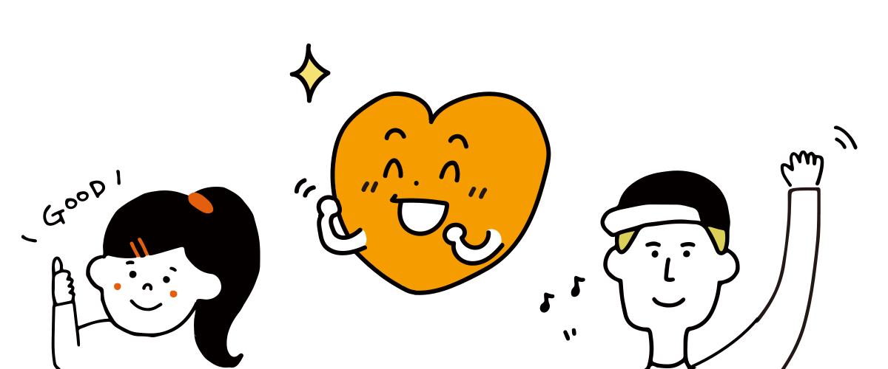

你的情感年龄是
岁
你是一位身心如一，身体和情感年龄高度重合的人。从测试结果可以看出，你有较好的身心保养意识，并一定为之付出了行动。希望你继续保持，延缓心身衰老。
恭喜你，你的情感年龄远年轻于你的真实年龄。这说明你平时十分注意你的脑部锻炼和保养，有较好的情绪调控能力和意识，不排斥接触新事物，注意饮食和营养元素的补充。希望你再接再厉，继续保持，情感上越来越年轻。
如果你的实际年龄超过35岁，那么恭喜你。因为处于思秋期（35岁~65岁阶段）的你，拥有很好的脑部健康和激素平衡。相信这与你的健康饮食和营养补充、定期锻炼与保健、愿意不断尝试并接受新事物的挑战，有着很大的关系。换言之，正因为你处于一个健康的思秋期，才使得你在情感年龄上比绝大多数人年轻。健康的思秋期可以让人从内而外散发年轻的气息，请继续保持。
请不要忽视这5岁情绪年龄的老化，因为忽视意味着衰老。如果你的实际年龄超过了35岁，请一定注意提高警惕。人的35~65岁的阶段，被专家称之为“思秋期”的阶段。这一阶段人会在无意识间，对各种事物的积极性逐渐衰退，这是情感老化的一种表现。而积极性衰退的原因，是因大脑前额叶的衰退和激素分泌异常导致的，如果忽略了这一情感老化，不积极应对，人就会在短时间内衰老下去，一发不可收拾。5岁年龄差的情感老化，还在可控范围。建议你要注意饮食，多补充促进激素分泌和抗氧化的食材，如石榴，鳄梨，金枪鱼，肉苁蓉，牡蛎，蜂王浆等，必要的时候可以摄取一些安全有效的机能性辅助食品。要积极跳出常规思考的怪圈，走出舒适圈，多积极接受新事物、新观念来锻炼大脑。
请不要急于否定这个测试结果。如果你已经想否定这个结果，认为其是不准确的，不愿意承认你的情感年龄已大于实际年龄10岁及其以上，那么这一表现恰恰证明了你的情感老化。据专家证明，思秋期（35岁~65岁）阶段情感老化的一种典型表现便是：不愿意接受新事物或者新刺激，极力坚持自己的固有认知，并不愿意改变现状认知。思秋期情感的老化是因大脑前额叶的衰退和激素分泌异常导致的。如果不积极应对，人就会快速步入老年期。 对于这个检测结果的你，我们给出的建议是：应该积极了解和面对“思秋期”，并系统地积极应对思秋期的一系列变化，以达到调整衰老进程的目的。建议你应该尝试接受新的观点；保持尝试任何挑战的好奇心和行动力；有意识地发现新挑战并付诸实际行动。为了减缓大脑的衰老，应该多摄取利于促进激素分泌和抗氧化的食材，如石榴，鳄梨，金枪鱼，肉苁蓉，牡蛎，蜂王浆等，必要的时候可以摄取一些安全有效的机能性辅助食品。此外，肠道菌群对身体的影响比基因遗传还要强大。益生菌、纳豆、酸奶等发酵食品以及海带、大麦等膳食纤维含量较高的食品，对你而言都是不错的选择。